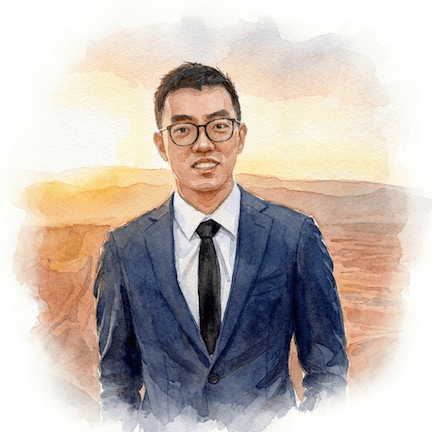
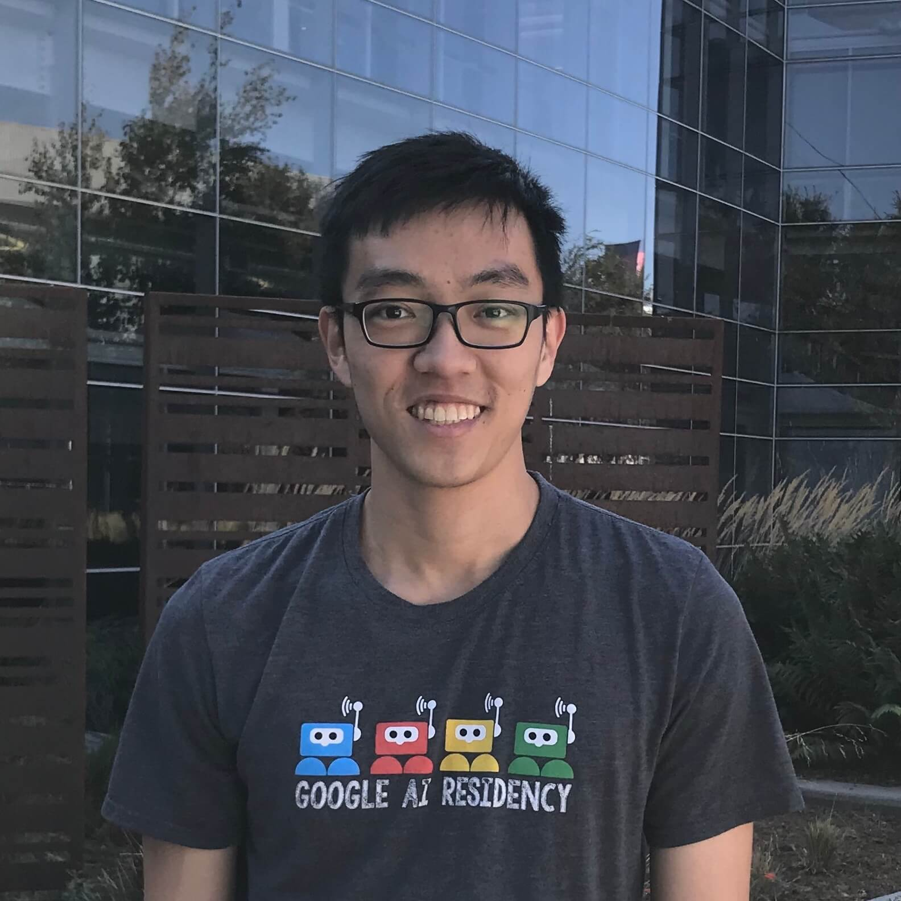

I build general-purpose agents that can automate computer work. My research interests include multimodal AI, vision-and-language, and generative models. I'm currently a final year ML PhD student at Carnegie Mellon University, working with Daniel Fried and Ruslan Salakhutdinov. My research is generously supported by the Jane Street GRFP.
From Jun 2024 to Dec 2025, I was on a leave of absence from CMU, and worked fulltime at MSL TBD Lab as the lead of the computer use agents team. Before the PhD, I worked at Google Research from 2019-2022. Before that, I completed my undergrad with summa cum laude honors at the Singapore University of Technology and Design in 2019.
My first name is "Jing Yu" and informally I go by the nickname "JY". 许靖宇 is my name in Chinese. I'm from Singapore.
News
- Dec 2025 After 1.45 years, I've left Meta to return to CMU!
- Jan 2025 Gave an invited talk about Multimodal Computer Agents at Google DeepMind.
- Aug 2024 Gave invited talks about Tree Search for LM Agents at UW, CMU, and Meta.
- Jun 2024 Personal update: I've joined the Llama team at Meta to build multimodal agents!
- Jun 2024 Excited to share a new preprint: Tree Search for Language Model Agents.
- Spring 2024 Gave invited talks about VisualWebArena at NUS, Jane Street, and Cohere for AI (recording).
- Feb 2024 Awarded the Jane Street Graduate Research Fellowship. Thank you Jane Street!
- Jan 2024 Excited to share a new preprint: VisualWebArena: Evaluating Multimodal Agents on Realistic Visual Web Tasks.
-
Older news
- Sep 2023 1 paper accepted to NeurIPS 2023!
- Summer 2023 Gave an invited talk about GILL at DLCT and Cohere For AI (slides, recording).
- Apr 2023 1 paper accepted to ICML 2023!
- Spring 2023 Gave invited talks at Microsoft Research, Apple AI/ML, Georgia Tech, and the London ML Meetup (recording, slides).
- Dec 2022 I made a bet on LLM capabilities with my office mate Ben Chugg. Bubble tea is on the line.
- Nov 2022 Parti was accepted to TMLR with a Featured Certification!
- Oct 2022 In the spirit of paying it forward, I'm sharing my Statement of Purpose publicly. Hope it helps future applicants!
- Jul 2022 After 2.73 wonderful years at Google, I've left to pursue my PhD at Carnegie Mellon University!
- Jan 2022 1 paper accepted to ICLR 2022!
- Dec 2021 Serving as a reviewer for CVPR 2022.
- Jul 2021 1 paper accepted to ICCV 2021!
- Jul 2021 Presenting an invited talk at Microsoft Research.
- Jul 2021 Serving as a reviewer for NeurIPS 2021.
- Mar 2021 1 paper accepted to CVPR 2021!
- Jan 2021 1 paper accepted to ICLR 2021!
- Oct 2020 1 paper accepted to WACV 2021!
- Jul 2020 1 paper accepted to ECCV 2020!
- Oct 2019 Officially joined Google as an AI Resident in Mountain View, California.